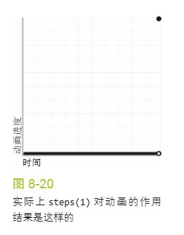

Peek-a-boo!
Peek-a-boo!
Peek-a-boo!
animation-direction 的唯一作用就是反转每一个循环周期（reverse）
或第偶数个循环周期（alternate），或第奇数个循环周期 （alternate-reverse）
它的伟大之处在于，它会同时反转调整函数， 从而产生更加逼真的动画效果
请注意，我们必须把动画循环的次数翻倍,而不是像前面的方法那样把循环周期的时间长度翻倍
因为现在一次淡入淡出的过程是由两个循环周 期组成的。基于同样的原因，我们也要把 animation-duration 减半。
@keyframes blink {
to { color: transparent }
}
.highlight {
animation: 1s blink 3 steps(1);
}
但是，这个尝试会华丽地失败：什么动静也没有
原因在于，steps(1)本质上等同于steps(1, end)，它表示当前颜色与 transparent 之间的过渡会在一次步进中完成
于是颜色值的切换只会发生在动画周期的末尾

因此，我们会看到起始值贯穿于整个动画周期，而终止值只在 动画结尾的无限短的时间点处出现
如果我们改用 steps(1, start)，结果 就完全相反了：
颜色值的切换会发生在动画周期最开始，于是我们始终只能 看到纯透明的文字，没有任何动画或闪烁效果。
我们接下来可以换用 steps(2) 来碰碰运气
现在我们终于可以看到闪烁效果了， 但这个闪烁效果要么是由半透明切到纯透明，要么是由半透明切到实色，原因同上
由于我们无法通过配置 steps() 来让这个切换动作发生在动画周期 的中间点（只能发生在起点或终点），唯一的解决方案是调整动画的关键帧， 让切换动作发生在 50% 处
@keyframes blink {
50% { color: transparent }
}
.highlight {
animation: 1s blink 3 steps(1); /* 或用step-end */
}